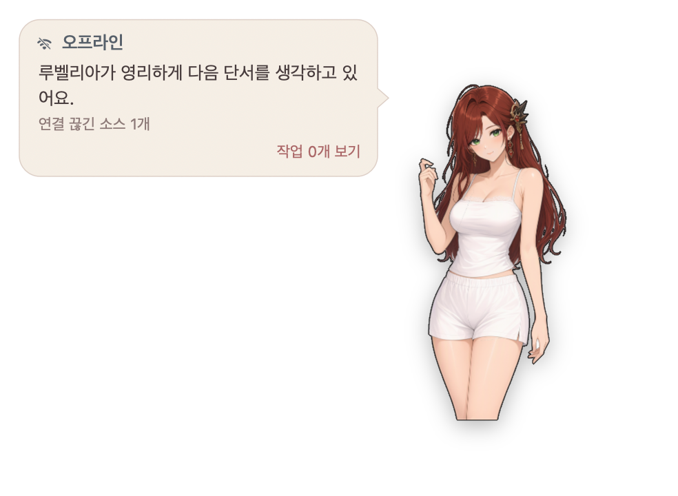

只显示已观测状态
气泡中的会话卡片显示空闲、运行中、等待输入或状态未知；不会推测代理的工作结果。
原生桌面伙伴
在 Rubelia 的气泡中查看已观测到的会话状态，并向选定的本地代理提交消息。消息被接收不代表任务已完成。
只想使用角色、不连接 Herdr？请查看独立运行方法。
Apple 芯片 Mac macOS 13 及以上 内置角色 Rubelia

01 / 应用实拍
以下画面拍摄于隔离的离线环境，使用的是 macOS 原生应用 v0.3.2；截图中没有已连接的会话。


02 / 功能
利用已观测到的 Herdr 工作区信息与桌面角色的三种方式。
气泡中的会话卡片显示空闲、运行中、等待输入或状态未知；不会推测代理的工作结果。
从选定的本地代理卡片发送消息。Herdr 接收消息不代表工作完成；远程卡片仅供查看。
轻点头部或身体，或抚摸头部以触发反应。还可以拖动角色、调整大小。
03 / 开始使用
适用于 Apple 芯片 Mac，需 macOS 13 及以上。两种方式均通过 Homebrew 安装同一款原生应用和 CLI；连接 Herdr 不需要安装插件。
手动将原生应用连接到这台 Mac 上正在运行的 Herdr 服务器（观察本地会话需要 Herdr 0.9.0 及以上）。先启动服务器，再依次安装、检查版本、启动应用并查看状态。
brew install hanbong5938/tap/herdr-desktop-pet
herdr-desktop-pet --version
herdr-desktop-pet start
herdr-desktop-pet status同时核对 CLI 版本以及运行中应用的 status 版本和可执行文件。如果服务器实际使用的套接字与环境变量或默认路径不同，找到真实的后端套接字路径，并将 herdr-desktop-pet start --socket PATH 中的 PATH 替换为该路径。--socket 指向 Herdr 后端，而非应用的控制套接字。只有本地服务器支持 agent.prompt 才能从卡片回复；接收确认（ACK）不代表代理已完成工作。
无需 Herdr 服务器即可运行同一款原生应用。首次启动前，关闭新配置中服务器断开时退出的策略，并检查保存的设置。没有连接时无法使用会话卡片或回复功能。
brew install hanbong5938/tap/herdr-desktop-pet
herdr-desktop-pet --version
herdr-desktop-pet settings set exit_with_herdr off
herdr-desktop-pet settings get
herdr-desktop-pet start
herdr-desktop-pet status如果只想显示角色、不显示气泡，可在启动后选择执行 herdr-desktop-pet hide_bubble；应用仍会继续运行。若所有已登记的本地端点都被明确禁用或取消关联，exit_with_herdr off 并不能阻止应用退出。
上述原生连接和独立运行都不需要插件。只有想在运行中的 Herdr 主机上安装插件并调用其启动操作时才使用此方式。如果无法取得固定版本的预构建产物，默认插件安装流程可能转为从源码构建，届时需要 Rust/Cargo、Bun、Node.js/npm 和 Xcode Command Line Tools。
herdr plugin install hanbong5938/herdr-desktop-pet
herdr plugin action invoke start --plugin desktop-pet客户端连接时自动启动是另一项功能：需要对官方 Herdr 0.9.3 源码应用 client.attached 补丁后构建主机，或使用明确支持该钩子的主机版本。原版 0.9.0/0.9.3 不包含此钩子；上文的原生应用手动启动不需要它。
更多操作说明请参阅简体中文使用手册。
04 / 角色
仅内置 Rubelia 一位角色。可选角色和服装包由独立的官方角色仓库维护。在支持此功能的应用版本中，角色浏览器仅提供已发布且受支持的扩展包，需明确操作才能下载、验证并应用。
浏览官方角色仓库Rubelia default@005 / 使用须知
开始之前，了解以下几点。
不能。原生发行版面向运行 macOS 13 及以上版本的 Apple 芯片 Mac。
不是。选定本地会话的服务器支持 agent.prompt 时可以提交消息。成功仅表示 Herdr 已接收消息，并不表示代理已处理或完成任务。远程会话仅供查看。
不会。客户端连接时自动启动需要支持 client.attached 钩子的主机：可以将所提供的补丁应用到官方 Herdr 0.9.3 源码，或者使用明确支持该钩子的主机版本。原版 0.9.0 和 0.9.3 均不支持此钩子。
没有，只内置 Rubelia。其他可选扩展包及其使用条款请参阅独立的官方角色仓库。